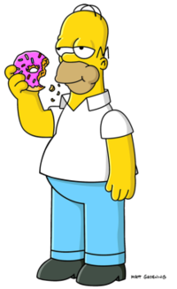

Simpsons family

The Simpsons (often shortened to Simpsons) is an American animated sitcom created by Matt Groening for the Fox
Broadcasting Company. The main characters are a satire of a working-class family, consisting of Homer, Marge, Bart,
Lisa, and Maggie. The series lampoons many aspects of American culture, society, politics, and history.

-
“Better them than me.”
―Push notification when a character other than Homer finishes a job.
-
“Better them than me... Oh wait, that was me.”
―Push notification when Homer finishes a job.
-
“Marge, my face hurts again!”
―Homer in The Simpsons: Virtual Springfield

- “Ay Caramba!”
―Bart's catchphrase and first words
- “Eat my shorts!”
―Bart's second catchphrase
-
“Don't have a cow, man.”
―Bart's third catchphrase
-
“If anyone wants me, I'll be in my room.”
―Lisa's "catchphrase"
-
“The truth must be told.”
―Lisa Simpson
-
“I hope these are recyclable.”
―Lisa Simpson